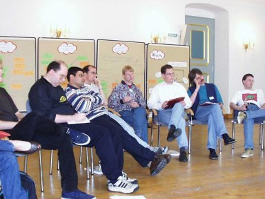

25. DISPLAY RESULTS AND PROBLEMS *
The participants should be able to identify themselves with the seminar. This requires that everybody is aware of results, achieved goals, milestones and perhaps problems. In addition to just REFERENCING THE PLAN (which states goals and objectives), everybody should see that the seminar produces usable and visible results (and thus reaches the goals and objectives).

Therefore, make results, reached goals, objectives as well as open points and problems visible and obvious to all participants. Use lists, posters, et cetera to do so. Every participant should be allowed to add open points or work products (in a structured way). Everybody can write down important topics and problems. As a consequence, participants will be able to recognize what the group has achieved, and which points are still open. Questions do not have to be asked again and again, and the participants can see that the questions are not forgotten. It can also serve as a SUMMARY or as a way to REPEAT TOPICS. Using this pattern can also help to build a COMFORTABLE ENVIRONMENT.
Put the problems and achieved results on a poster on the wall for everybody to see. A bulletin board can be used to collect questions and open points. If it is not possible to "decorate the room" this way, use sheets of paper that can be edited by everybody and keep them is a publicly accessible place. Copy these papers for everybody on a daily basis. Modern technologies like the WWW, news and email offer additional possibilities. For example you could use a seminar web page that everybody can edit over the web, using tools like WikiWiki.